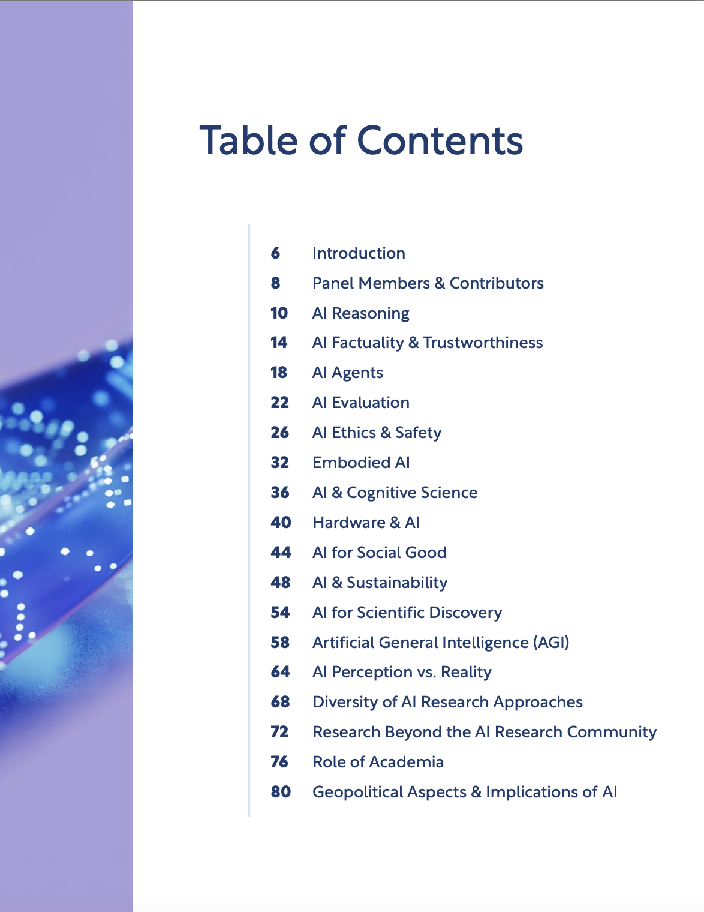
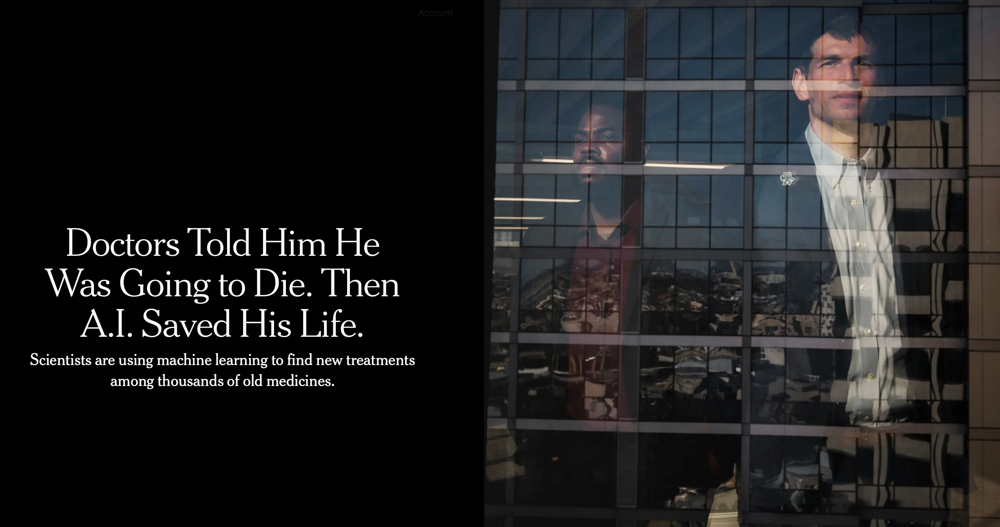
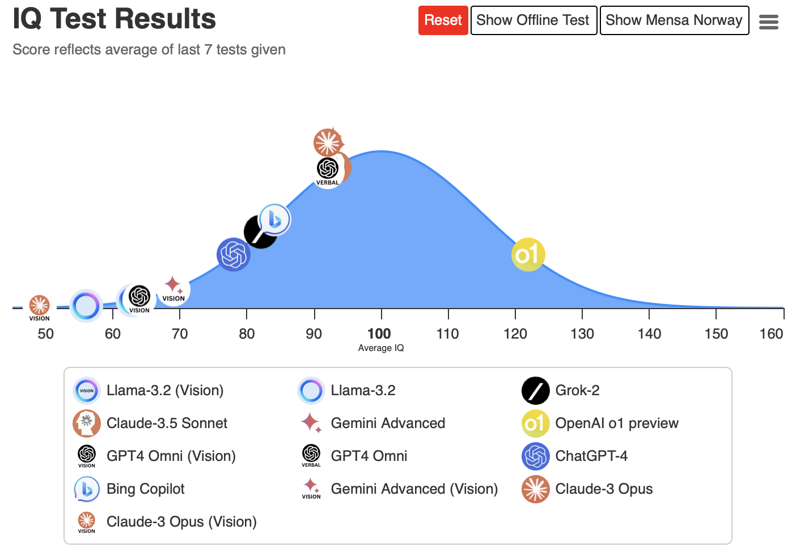
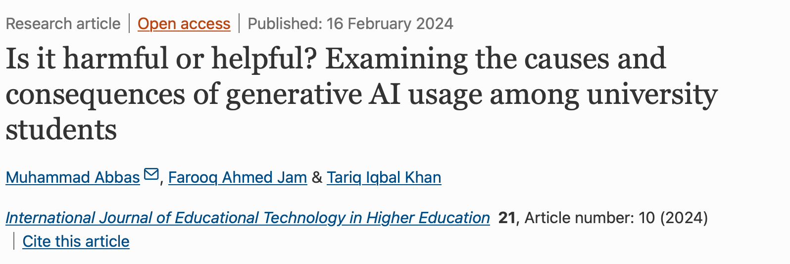

How to brAIn
Vision on AI and learning at Methodology and Statistics
![]()
26 Mar 2025
Some preliminaries
Disclaimer
This presentation is also a collection of my thoughts and opinions. It does not necessarily represent the views of everyone at the department.
These materials are generated by Gerko Vink, who holds the copyright. The intellectual property belongs to Utrecht University. Images are either directly linked, or at some point generated with a Large Language Model. That said, there is no information in this presentation that exceeds legal use of copyright materials in academic settings, or that should not be part of the public domain.
Warning
You may use any and all content in this presentation - including my name - and submit it as input to generative AI tools, with the following exception:
- You must ensure that the content is not used for further training of the model
Source:
First of all
Education is a universal right
Everyone has the right to education. Education shall be free, at least in the elementary and fundamental stages. Elementary education shall be compulsory. Technical and professional education shall be made generally available and higher education shall be equally accessible to all on the basis of merit
Source: Universal Declaration of Human Rights as declared by the United Nations in 1948.
Second of all
OpenAI CEO Sam Altman and CPO Kevin Weil answered questions from students at the University of Tokyo. They said that humans will no longer be able to compete with artificial intelligence in areas such as mathematics, programming, or physics, but instead will do things that no one has been able to do before.
Who develops generative AI tools
- Generative AI technologies are often developed by publicly traded companies with:
- Deep pockets
- Shareholders
- Motives and goals that may diverge from academic or public interests
- These technologies also require significant computing resources for training and operation
- This skews access and development to those with substantial resources.
- If you feel sad or overwhelmed by the low sense of control in Academia, read Choose Your Weapon: Survival Strategies for Depressed AI Academics
Togelius, J., & Yannakakis, G. N. (2024). Choose Your Weapon: Survival Strategies for Depressed AI Academics [Point of View]. Proceedings of the IEEE, 112(1), 4-11.
What does this tell us?
What does this tell us?
Exactly!

However

Dead end?
Scientific Discovery
AI assisted or human assisted?
AI Research in Academia
A bit about human intelligence
What is human intelligence?
Human intelligence is the ability to learn, reason, solve problems and adapt to new situations
- Human intelligence is not unidimensional:
- Cognitive abilities: memory, logic, problem solving, etc.
- Emotional intelligence: such as empathy and self-awareness
- Human intelligence is the result of careful integration of our senses, emotions, and cognitive abilities

How do humans learn?
There are multiple forms of learning:
- Experiential learning: Learning through direct experience with an emphasis on reflection and application
- Social learning: Learning through observation and interaction with others with an emphasis on social context and collaboration
- Symbolic learning: Using language and numbers to convey information
Neuroplasticity is key
Neuroplasticity is the brain’s ability to reorganize itself by forming new neural pathways throughout life.
- Neurplasticity is crucial for learning and memory. It allows the brain to adapt to new experiences.
- Neuroplasticity is also crucial in happiness and stress regulation
What does our brain need?

What does our brain want?


We all (i.e. worldwide) seem to have an intrinsic motivation to avoid cognitive effort.
- The larger the cognitive effort, the larger the aversion to it.
This bites a bit with…
The 10,000 hours rule
Roughly 10,000 hours of deliberate, focused practice are needed to achieve mastery in a complex skill
This idea was popularized by Malcolm Gladwell in his book Outliers.
It has a scientific basis in the work of Ericson, Krampe and Tesch-Romer (1993)
Later research by Macnamara, Hambrick, and Oswald (2014) examined the role of deliberate practice across various domains. It turns out that while practice plays an important role, it is not the sole determinant of success.
Promise so far
AI is said to contribute to learning and mastering skills in at least the following ways:
- Personalized feedback and adaptation
- Leveling the playing field: scalability and accessibility
- Performance measures and insights into one’s progress
- Simulated environments, tests, and practice scenarios
Promise so far
AI is said to contribute to learning and mastering skills in at least the following ways:
- Personalized feedback and adaptation
- Leveling the playing field: scalability and accessibility
- Performance measures and insights into one’s progress
- Simulated environments, tests, and practice scenarios
But, also:
- Potential overrelience on technology and AI tools
- Wrong learning paths and cognitive shortcuts
- Poor or incorrect feedback due to faulty models (until GSI)
- No nuanced insights and human-equivalent mentorship (yet)
- No human, which would require at least a hybrid interaction
- Self-assessment and critical thinking skills are at stake
Positive Impact of AI on Education
Not really learning, but effective
Productivity is better
Coding is better and easier
What can we learn from this?
GenAI tools can be a great asset in the educational process. They can help students to be more productive, to code more effectively and to develop new skills.
However
This does not mean that they learn more or better. It means that they can be more effective in their learning or output process.
The bottomline is that the basis of this learning process needs to be established before you can use add AI to it.
If GenAI is replacing the thinking process, humanity may stumble into an existential crisis.
Negative Impact of AI on learning
First: ‘Performance’ of GenAI

First: ‘Performance’ of GenAI
First: ‘Performance’ of GenAI
Impact of AI on Cognitive Performance

Impact of AI on Cognitive Performance

Impact of AI on cognitive performance
 
Impact of AI on Critical Thinking and Task Management
Self assessment impact
Self-assessment covers the ability to critically reflect on your own work and progress
If learners depend too heavily on AI to evaluate and correct their work, they might not fully develop their own ability to judge the quality of their efforts:
- Over-relience on feedback lowers the development of your own reflective and evaluative processes.
- Reliance on external validation creates pathways to look to AI tools to determine what is good/bad, right/wrong.
- If you grow accustomed to using AI tools, you are not (further) developing metacognition skills: the ability to think about and control your own learning process.
- Risk of passive acceptance of AI content and feedback
My biggest fear

Cogito ergo sum
Advice
The way that humans learn has not changed. The tools that we have at our disposal, however, are becoming more plentiful. We should be careful in implementing these tools into student learning, as they may pose a threat to our cognitive relevance. Teaching students how to leverage their own work and creativity is a prime goal for the future of education.
Teaching our community to replace their own thinking with AI tools will limit the potential of our scientific effort and our intellectual property.
Tip
Use generative AI tools to extend your capabilities, not to replace them.
To sum it up

Conclusion
Integration of AI: Based on its current use, there is a growing need to integrate AI tools into education. Howevere, you don’t need AI to learn!
Risk to metacognition skills: Excessive use of AI tools is demonstrated to negatively affect the development of higher cognitive abilities. It is crucial that students continue to engage in demanding intellectual processes (e.g., essay writing).
Balance AI use: AI should complement rather than replace students’ effort and abilities. It is essential for students to understand that uncritical reliance on AI can hinder their learning; AI can be helpful, for example, in producing tables or creating initial draft slides, but not as a substitute for cognitive engagement.
Take responsibility and be safe and transparent: Both students and faculty must learn to be transparent about where and how AI is used, and to be aware of ethical considerations. We need an in-house (enterprise) AI model to ensure privacy, security and equal access for all.
Create learning process awareness before critical skills: Guidelines on critical skills for AI usage alone is insufficient; our community needs education on why certain AI-related rules are in place and how AI impacts their learning, particularly in the first year of undergraduate studies.
Student rights in the AI-Era Classroom
Human contact is a right
Every student has the right to be educated and graded by a human being. That right also includes the right to know a priori to what extend AI is used
- in creating the educational materials,
- in providing feedback,
- in grading student work.
Every student has the right to refuse interaction or any other involvement with an AI for their coursework.
Towards responsible genAI use
I believe that we should demand from the scientific community to follow these simple steps when using generative AI tools:
- Minimize the use of AI tools, as they are (currently) environmentally unfriendly
- Don’t input confidential or personal information
- Don’t input information that violates IP or copyright
- Don’t violate IP with using output from the tool
- Confirm the output accuracy
- Check the tool output for bias
- Disclose the use of AI tools in your work
- Don’t do naughty or unjust things with AI tools
- Ask the tool not to use input for training
- Open the content you produce by using AI tools as much as possible with permissive licenses
If in doubt about any of the above, don’t use AI tools.
AI Assessment Scale may help you

Gerko Vink - Methods & Statistics @ UU